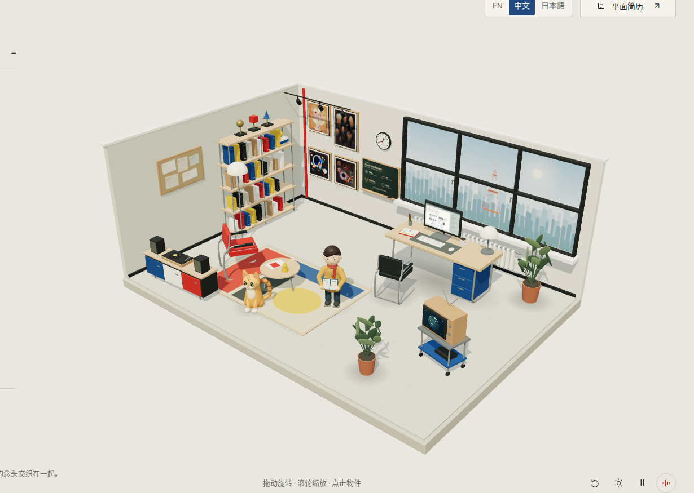

An indistinct mingling of enthusiasm, self-denial and virtue.André Gide · La Porte étroite, I · excerpt
An indistinct mingling of enthusiasm, self-denial and virtue.
Read the complete academic résumé ↗.